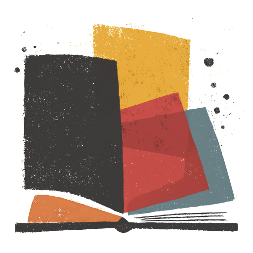
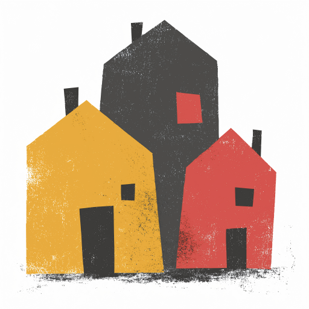
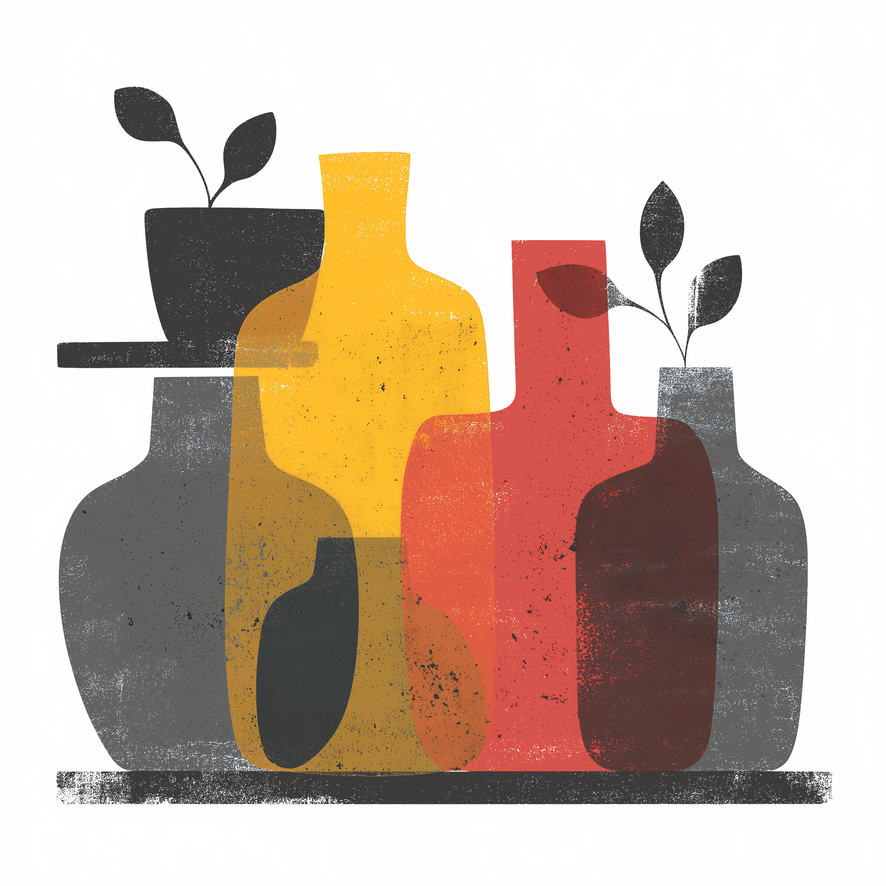
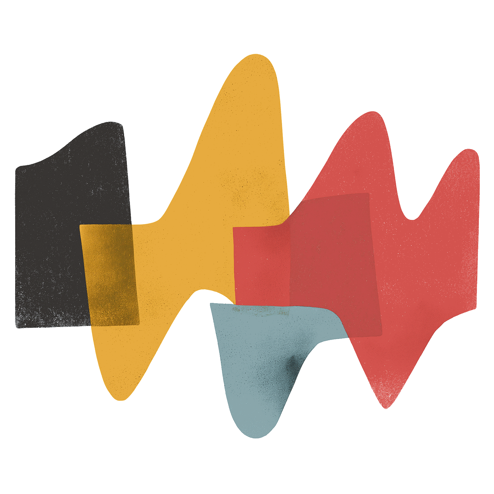

Warm, quiet, and strict about colour.
One serif for everything. Cream surfaces, never white. Quantities that stay neutral until they have something to tell you, and a five-level ramp reserved for scores. This document is the reference – every rule here exists because something shipped wrong first, and the fix is recorded next to it.
Five principles
If you remember nothing else, these five decide most questions.
| One surface depth | A slab inside a slab is always wrong. Groups are made by a hairline rule and the space around them, not by a box. |
| Colour means something | Quantities are neutral by default. Sapling is good news, fire needs action. Accent-by-default spends the alarm colour on nothing. |
| Scores are the exception | A score is a level, so it takes the five-level ramp. A quantity is not a level, so it stays neutral. Never mix the two in one column. |
| Solid vs tint | Solid fire = active or primary. Fire tint = status. This division is what lets one family be both accent and alarm without ambiguity. |
| Chrome is forever | Explanation belongs in a tooltip or a menu header, not in the bar. A label you only need twice costs you on every page load. |
| Nothing before it’s needed | Search appears past six items. Client grouping appears when a client has two projects. Empty structure is worse than no structure. |
Colour
Eleven families, seventeen stops each – 100 lightest to 900 darkest, in fifties. The brand true colour of each family is the 500 stop. Only three families do structural work; the rest are chart colour or carry a single meaning.
Limestone – every surface
Warm cream. Pure white appears nowhere in the system – a white panel against this palette reads as a system alert rather than part of the product, which is why dropdown menus sit on limestone-150 and not #fff.
| Token | Stop | Where |
|---|---|---|
| --surface-page | 500 | The page itself |
| --surface-chrome | 400 | Top bar, secondary nav |
| --surface-card | 300 | Data surfaces, list rows, metric bands |
| --surface-raised | 600 | Intro and aside blocks that sit on the page; segmented-control track |
| --surface-menu | 150 | Dropdown panels |
| --surface-field | 200 | Text inputs |
| --rule-section | 700 | Section headers, chrome edges |
| --rule-row | 600 | Between rows inside one surface |
| --rule-field | 750 | Input and ghost-button borders |
Gloaming – all text
Warm charcoal, never pure black. gloaming-450 is the floor for mono labels – anything lighter fails contrast at 10px, and that’s the most common defect that reaches review.
| Token | Stop | Where |
|---|---|---|
| --text-strong | 800 | Headings, values, active states |
| --text-body | 700 | Body copy |
| --text-secondary | 500 | Ledes, supporting copy |
| --text-muted | 450 | Mono labels, hints. The floor – --label-color resolves here too. |
| --data-zero | 400 | Genuine zeros only. Passes at 30px Display; never use 400 for 10px text. |
| --surface-inverse | 800 | Tooltips |
Fire – the accent, doing two jobs safely
Fire is both the brand accent and the alarm colour. That’s only workable because of one strict division: solid fire means active or primary; a fire tint means status. Solid fire is a button, an active tab underline, a switch that’s on. Fire-200 with fire-700 text is a chip. They never swap.
Solid – active / primary
fire-500 buttons, fire-600 switch on, fire-500 tab underline.
Tint – status
fire-200 chips, fire-600 text. Destructive is always a tint, never a fill.
Supporting families
Sunshine, wave and sapling carry meaning. Coffee, olive, amber and sorbet are chart colour only – never state, never UI.
The level ramp – five rungs, scores only
The framework scores each criterion out of five stars, which is why the ramp has exactly five rungs. The brand guide fixes two of them: amber is the level 2 colour, olive the level 4, each halfway between its neighbours.
Reserved. These five colours mean a score and nothing else. They are not a categorical palette – an orange bar in a "top sections" chart reads as level 2 whether you mean it or not, and sitting near a score column that is a real misread. Categorical bars use one colour (--categorical); ordered process stages use a wave ramp with fire for failure (--process-*).
Band thresholds are provisional – --score-band-5 and friends currently sit on 90/80/70/60. They should be replaced with the framework's real star boundaries, so the colour changes where meaning changes rather than on round numbers.
Data colour – quantities stay neutral
The Monitoring page originally rendered every value in accent red, including $0.0000 and 0%. That spends the alarm colour on nothing and leaves nothing to signal a real problem with. Numbers are neutral until they’ve earned a colour.
Typography
Bely for everything – body, headings and UI all share one serif. That’s unusual and it’s the strongest thing about the identity, so don’t reach for a sans to "fix" a dense screen. Mono is the metadata voice and nothing else.
One scale, two inputs
Every size in the app is a multiple of --u. Two numbers feed it, and both are owned by the library:
--base-font-size is product density. The library sets 24px for the website; each product theme overrides it. themes/content-health-check.css already ships 18px — which is why these tools feel like an app rather than a marketing page.
--text-multiplier is the responsive step — 1 below 48rem, 1.1 above it, 1.2 above 96rem, declared in @layer base. So this scale is responsive for free, and nothing here should ever assign it a density value. Setting --text-multiplier: 0.75 would be a bug: it collides with the breakpoint rules and double-applies against the theme's 18px.
The specimens below are rendered from the live tokens, and every px figure is read back off the DOM at load. Nothing on this page is transcribed, so it cannot drift from the CSS. Drag the slider to preview a breakpoint step.
| Token | × --u | Renders | Specimen |
|---|---|---|---|
| --t-title | 2.40 | Which one am I in? | |
| --t-metric | 1.72 | $41.28 | |
| --t-section | 1.25 | Queue health | |
| --t-lede | 1.10 | Each client gets its own space. | |
| --t-row | 1.05 | Oxfam 2 | |
| --t-body | 1.00 | The work comes out of your shared credits. | |
| --t-ui | 0.88 | Project settings | |
| --t-hint | 0.78 | Leave this empty and the banner stays hidden. | |
| --t-label | 0.62 | Total API cost |
The slider is a preview control on this page only — it writes to this document, not to the tokens. In the product these values arrive from tokens.css and the theme file.
Bely Display – page titles and metric values only
A single 400 cut, used at exactly two sizes: --t-title and --t-metric. Never below 30px, and never allowed to synthesise a bold – browsers default headings to 700 and fake it, which thickens the ink and breaks the cut’s proportions. font-synthesis-weight: none is set globally in tokens/fonts.css.
Section headings are Bely at --t-section, not Display. Display at section level competes with the page title and makes every group look like a new page.
The shorthands
Semantic font: shorthands bind a face, weight and line height to each role, so a section heading is one declaration rather than four. They compose from the same --t-* scale – until this pass they carried their own hard-coded px and quietly ignored the multiplier.
Mono – the metadata voice
System monospace at --t-label, 0.09em tracking, uppercase, gloaming-450 floor. It labels; it never carries content. Two rules that get broken constantly: don’t set it below the token, and don’t go lighter than gloaming-450.
Surfaces & depth
One surface depth per page. This is the rule that most changes how a screen looks, and the one most often broken – the original Monitoring page had five nested slab layers.
Cards and data surfaces have no border and no shadow. Rows inside one surface are separated by hairlines. A group of related metrics is one surface divided by rules, not four cards with gaps – it reads as a single instrument panel and removes three layers of box.
Shadows mean only "this floats above the page" – --shadow-md for tooltips, --shadow-lg for menus. Nothing in the page body casts one.
Wrong – slab in a slab
Three depths, two boxes doing the job of one rule, and the numbers can’t be compared across a row.
Right – rule plus one band
Cost
last 7 days
One depth. The group is defined by the rule above it and the space around it, which costs nothing.
Space, radii, motion
Radii
Never full-radius on a label. A pill reads as a button and invites a click a status never honours – that single change is most of what fixed the chips.
Vertical rhythm
| Where | Value |
|---|---|
| Section header rule → above / below | 42px / 18px |
| Metric padding | 17px 20px 18px |
| List row padding | 16px 22px |
| Menu row height / panel padding | 34px / 6px |
| Card row clearance (for edge chips) | 36px |
| Page gutters / max width | 28–40px / 1200px |
Motion, hover, focus
--transition-fast 180ms for state, --transition-base 280ms for reveals. No bounce, no spring, no entrance animation. The only loop in the system is the 1.6s chip dot pulse, reserved for genuinely live states.
Hover is a background step, not a colour shift. Transparent → limestone-600 for menu rows and controls; limestone-450 for list rows. Row actions are hidden at rest and revealed on hover. Focus is --focus-ring (fire-350) at 2px with 2px offset – browser-default blue is the only non-palette colour that ever appears, and it’s always a bug.
Star rating
The product's core score primitive. Five discrete levels are easier to compare across fifteen criteria than fifteen two-digit numbers.
Filled stars take the matching --level-N; empty stars take --level-empty. The star is an inline SVG in currentColor, per the icon rule – never a unicode glyph. The shape here is a stand-in; swap in the app's own star asset.
Always pass a label. Five identical shapes are unreadable to a screen reader.
Score gauge
One score out of 100 in an open ring. Not the freshness donut – that shows slices of a whole, this shows one value against a maximum.
Arc colour comes from the same score-to-level mapping as the stars, so a gauge and a rating for one score always agree. lg renders the value at 64px in Bely Display – the clearest use of the display cut in the product, and one per page.
Two legitimate ring types, then: a composition donut for content freshness (slices of a whole) and this gauge for a single score. They look similar, so never place them adjacent without a heading on each.
Score history
The one chart type in the system allowed axes.
Recorded each time the page changes and is re-scored.
The "no axes, no gridlines" rule was written for MicroSeries, where the shape is the whole message. A history chart has a different job – the reader needs to know when a score moved and by how much – so axes are permitted here and nowhere else.
Fewer than two points renders an honest empty state. A single point drawn as a flat line across the full width reads as "no change over time" rather than "only measured once".
Criterion card
One of the fifteen framework criteria, scored and explained. The most repeated block in the product – fifteen per result page, three across.
Analysis
The page contains no discernible spelling, grammar or punctuation errors, and reads as carefully edited throughout.
Analysis
The content is clear and well written, but does little to distinguish itself from any other supplier in the category.
How to improve
Rewrite the opening section to lead with the position only you can hold, and carry that voice through the body copy.
Analysis
There is nothing on the page a reader could quote, pass on or subscribe to – and no links out at all.
How to improve
Add one strong, quotable sentence and mark it up for sharing.
Name and rating centred above a hairline; prose left-aligned below. Centring the head is the exception that keeps a three-across grid scannable. Section labels are Bely bold at 14px, not mono – they head prose rather than label data.
Drop "How to improve" at level 5. "No errors were found" as improvement advice is filler, and every element has to earn its place.
Chip
Every status, role and type annotation in the product. One geometry, six tones – the tone carries the meaning and the shape never changes.
| Tone | Meaning | Tokens |
|---|---|---|
| neutral | Plain fact – roles, types, counts. No judgement. | limestone-700 / gloaming-600 |
| info | Positional or in-flight: where you are, what’s running. | wave-200 / wave-700 |
| good | A good outcome. | sapling-200 / sapling-800 |
| warn | Incomplete, awaiting action. Not an error. | sunshine-200 / amber-800 |
| bad | Broken, expired, over limit. | fire-200 / fire-700 |
| promo | The one exception. Solid fill, commercial offers only, never a state. Cap at one per screen. | fire-650 / limestone-100 |
Why not pills: the original design used full-radius saturated fills with body type. That reads as a button – it promises a click a status label never honours, and at full saturation it outranks the content it’s annotating. Mono uppercase on a soft tint reads as metadata, which is what these are.
Bare variant – the priority marker
A static dot plus mono text, no background. For a label that repeats down a long list, where filled chips would shout: five stacked opportunity cards each with a solid chip is too loud, and the dot carries the same information quietly. It is a variant rather than a new component so it can't drift into a third label style.
The dot here is static. The pulsing dot stays exclusive to genuinely live states.
On cards
Chips straddle the card’s top edge – top:-10px; left:20px. That’s deliberate: it reads as a tag applied to the card rather than content inside it, and it costs no vertical space, so chipped and chipless cards in a row keep their headings level.
Wrong – split to opposite corners
14px type in 8/14 padding – roughly double spec on both axes. Split to opposite corners, they read as two tabs rather than two notes about one card.
Right – grouped left, at spec
10px mono, 5/7 padding, 3px radius. Both together at top-left, 20px in, 6px apart.
Do
- One or two words. Three at a push, never a sentence
- Pair the value with the label when it’s short: "Healthy · 78"
- Two chips maximum, and only for the Selected / Current pairing
- Reserve the dot for genuinely live, moving states
Don’t
- No full-radius pills – they read as buttons
- No body or heading type inside a chip
- No solid fills except a commercial offer
- Don’t make a chip the only place a fact appears
- Don’t invent a seventh tone; map onto the nearest six
Button
One primary per view. Two solid fire buttons compete and neither wins. Ghost sits on the page, quiet sits on a surface, danger is a fire hairline – destructive actions never get a solid fill.
Disabled greys out completely. A washed-out accent button reads as a weak button rather than an unavailable one, which is a real failure – people click it and nothing happens.
Switch
Immediate on/off. Off is an empty recess; on fills with fire.
Wrong – fire in both states
Both read as "on". The only difference between states is which side a 20px circle sits on, and nothing says which side means what.
Right – neutral off, accent on
Off is limestone-800 with an inset shadow. Readable with the label covered.
Why fire and not sapling for on: sapling means "good outcome" in the data rules. If on = sapling, every off switch implies something is wrong – and plenty of settings are deliberately off. What the filled track actually says is "this is live", which is fire’s job everywhere else.
Do
- Say the state, not the action: "Banner is hidden", never "Hide banner"
- Emphasise the state word so it’s scannable without reading the sentence
- Fade dependent fields to 45% until the switch is on
- Use a checkbox instead when the setting only takes effect on save
Don’t
- Never colour the off track with the accent
- Not sapling/fire as on/off – this is active vs not, not good vs bad
- No "ON"/"OFF" text inside the track at this size
- Don’t leave a disabled save button looking like pale accent
Field
One component for input, textarea and select – the source pages styled these three separately with identical shells, which is how they drift.
You can add projects to a client once it exists.
Label in Bely 14px above, hint 13px muted below. The hint says the consequence, not the obvious – "Leave this empty and the banner stays hidden even when the switch is on", never "Enter your banner text below".
Card
card (limestone-300) for data. card--raised (limestone-600) for intro and aside blocks that sit on the page – the "how this works" explainer, the add-a-client form. Never a card inside a card.
Metric & band
One way to present a number, everywhere: mono label, value, one line of context. Always left-aligned, always tabular numerals.
Never centred. Centred numbers can’t be compared down a column – different digit counts put the decimal in a different place on every row.
Always pair the headline number with the figure it came from. "$41.28" is a fact; "3,074 calls · $0.0134 each" is useful. And round to the precision someone can act on: $41.28, not $41.2847.
Three or four metrics per band; five means two bands. The label may carry one chip; the value may carry a small unit.
Section header
A hairline rule with heading, one-line note and an optional action. This replaces the wrapper slab entirely.
Queue health
Background job queue, right now.
View failed jobs →Give data sections a real action – export, view failures, settings. A section with nothing to do about it is usually a section that shouldn’t be separate.
Charts
Two chart types, both deliberately minimal. Bar over donut, always.
Composition bar
Any "where did this total go" breakdown: one 9px stacked bar plus an inline legend carrying the values. Cheaper than a donut, reads at a glance, works down to a 320px column. Max four segments; anything under 5% folds into "Other", and loss or waste goes last in --comp-4.
Donuts are reserved for content freshness on the estate pages, where the "slice of a whole" metaphor genuinely earns itself.
Micro series
Trend over a small fixed window. Bars in wave-400, current period in wave-600. No axes, no gridlines, no tooltips – it’s a shape, not a chart. When someone needs the figures they use the metric beside it or the CSV export.
List
One set of mono column headers above the surface; rows inside it separated by hairlines. This replaced a stack of per-group cards, and the reason is simple: aligned columns can be compared, boxes can’t.
Row actions live on hover so they stop shouting. Group headings go between surfaces, not inside rows. Numeric columns right-align, and their headers align with them.
The secondary line is always the domain – it disambiguates "Oxfam" from "Oxfam 2" where a name can’t, and it’s the thing actually being audited.
Navigation
Three levels, and only the first two are navigation. There is exactly one secondary-nav component – the side rail and the button-group tabs are both retired.
The whole thing, assembled
 Content Health Check
Content Health Check| Level | What | Rules |
|---|---|---|
| 1 · Top bar | The work. Estate, Inventory, Watchlist, Results – project-scoped, never changes. | The switcher and its four sections form one cluster immediately after the wordmark. Avatar alone on the right. |
| 2 · The strip | Sections of a realm: Account, Billing, Project settings, Admin. | Realm label left, exit right. 2px fire underline for active. Max ~7 tabs, destructive last. |
| 3 · Not navigation | Sub-views inside a section: Monthly/Yearly, time ranges. | A segmented control inside the content. Never a second strip, never a rail. |
Why the cluster: with the switcher at the far left and its sections at the far right, nothing but convention connects them – and the moment a strip appears the switcher is touching that instead, 6px from tabs it doesn’t govern and ~700px from the pages it does. Proximity wins over intent every time.
Why the stand-down: in an admin realm the cluster dims to 42% (--nav-context-standdown) as one unit. That says two things at once – these five things are a group, and this group is not the page you’re on. They stay clickable; it’s de-emphasis, not disabling.
Why no side rail: Billing had one for four items, which didn’t earn 280px of permanent chrome and squeezed the plan cards into a narrower column than they needed. As tabs, the page gets its full width back and stops looking like a different app.
Repeat the active tab as the page h1. Redundant on purpose: it anchors the page when someone arrives from a deep link or a back button.
Page furniture
The pieces that frame a page. All four were in the app before they were in this system.
Page header – the illustration is required
Estate, Inventory, Watchlist and Results are four structurally identical list pages. The illustration is what makes them instantly distinguishable, and the marketing site pairs the same four images with the same four words, so they are effectively part of the terminology. Never build a top-level section without one, and never invent a new one – ask.
Watchlist
The pages you want monitored. Depending on the size of your inventory and your account, this may be everything, or a curated sample.




Breadcrumb – in the page, not the chrome
It says where this record sits; the nav strip says which realm you are in. Use it for drill-down only – a single result inside Results – never to restate the top-level navigation.
Compact band and figures grid
Two MetricBand variants. Compact is the stats strip under a page header. Grid is unrelated counts about one object – and it is the only place centring is allowed, because nothing is being compared down a column.
Apply --data-zero to genuine zeros. On the live result page "0 links" renders in the same weight as every other count, which hides it – and given Shareable scores two stars, it is arguably the most actionable number on the screen.
Process bar – wave, never the level ramp
A queued job is not a low score. The live version coloured its stages orange, amber, olive and green, which put "queued" in the same colour as "scores 68" a few inches away and made the red failure bar read simultaneously as level 1.
Result card
Footer
Content Health CheckKeeping track of the health and fitness of your content across multiple criteria.
Built by Contentious, the strategic content practice, who also make Content Maturity and Voice, Tone & Style.
Copy
British English, sentence case, second person, present tense. Dry and specific – slightly understated rather than encouraging.
| Rule | Instead of | Write |
|---|---|---|
| State the state, not the action | Hide banner | Banner is hidden |
| Say the consequence | Enter your banner text below | Leave this empty and the banner stays hidden even when the switch is on |
| Pair the number with its source | $41.28 | $41.28 · 3,074 calls at $0.0134 each |
| Actionable precision | $41.2847 | $41.28 |
| Name the target | Settings | Settings for Oxfam 2 |
| Explain what failed | Something went wrong | 7 failed in the last 24h · 5 are Firecrawl timeouts |
Do
- Sentence case everywhere – headings, buttons, tabs, labels
- Analyse, colour, organisation, prioritise
- Explain the model once, quietly, where the confusion happens
- Let a 12px line at the foot of a menu do the work of a modal
Don’t
- No emoji, no exclamation marks
- No "Oops", no "Let’s get started", no "the user"
- No Title Case except proper nouns
- No copy that only restates the field it sits under
File map
Link one stylesheet and use the classes. There’s no build step.
<!-- everything below is available from this one link -->
<link rel="stylesheet" href="styles.css"/>
<span class="c-chip c-chip--good">Healthy · 78</span>
<div class="c-metric">
<div class="c-metric__label">Total API cost</div>
<div class="c-metric__value">$41.28</div>
<div class="c-metric__sub">3,074 calls · $0.0134 each</div>
</div>
@import list only – link this one file.@font-face rules and the synthesis-weight guard.Iconography: no icon library. UI icons are hand-written inline SVG at 14–16px, 1.2px stroke, currentColor – about a dozen in total. Concept illustrations are the flat PNGs in images/. No emoji, no unicode glyphs as icons; the one exception is the arrow in link text ("Export CSV →"), which is typographic.
Where these rules came from
Each pattern page is the argument behind a rule, with the before-and-after. Read one when you want to know why rather than what.